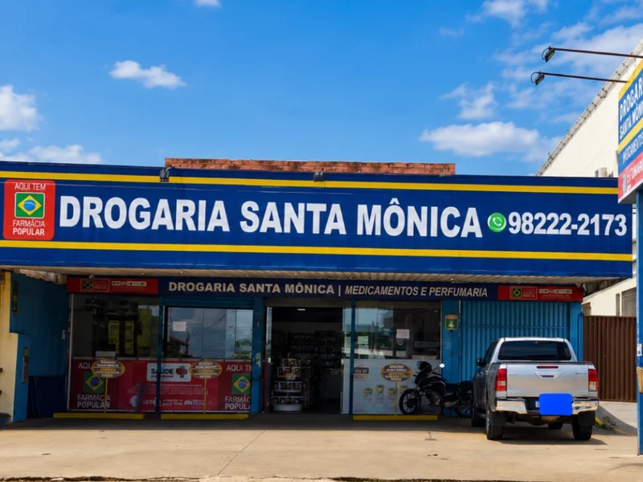

Aferição de Pressão Arterial
Meça sua pressão arterial na Santa Mônica. Atendimento diário das 07h40 às 21h45 no Parque Trindade I, sem agendamento e sem filas.
Chamar no WhatsAppMais do que uma drogaria, somos um lugar de cuidado e acolhimento no Parque Trindade I. Medicamentos, suplementos, cosméticos e perfumaria, com atendimento humanizado e entrega na sua casa.
Cuidando da sua saúde todo dia.
Faça seu pedido aquiTele-entregas: (62) 3988-1500 • WhatsApp: (62) 98222-2173
Somos credenciados ao programa Farmácia Popular do Governo Federal. Medicamentos para pressão, diabetes e asma são gratuitos — e há outros com até 90% de desconto. Basta trazer CPF, documento com foto e a receita médica.
Na Santa Mônica você cuida da sua saúde sem precisar de agendamento.
Atendimento todos os dias, das 07h40 às 21h45, no Parque Trindade I.
Meça sua pressão arterial na Santa Mônica. Atendimento diário das 07h40 às 21h45 no Parque Trindade I, sem agendamento e sem filas.
Chamar no WhatsAppVerifique sua glicemia na Santa Mônica todos os dias, das 07h40 às 21h45, no Parque Trindade I. Sem necessidade de agendamento.
Chamar no WhatsAppAplicação de injeção todos os dias em Aparecida de Goiânia. Segurança, higiene e comodidade no Parque Trindade I, das 07h40 às 21h45, sem agendamento.
Chamar no WhatsAppA Santa Mônica é a farmácia do Parque Trindade I com atendimento todos os dias das 07h40 às 21h45. Medicamentos, cosméticos, vitaminas, fraldas e perfumaria — com Farmácia Popular e tele-entrega pelo WhatsApp ou pelo (62) 3988-1500.
Linha completa de medicamentos de referência, genéricos e similares. Aceitamos receitas e os programas de desconto dos laboratórios. Retire na loja ou receba em casa em Aparecida de Goiânia.
Somos credenciados ao programa do Governo Federal: medicamentos para pressão, diabetes e asma gratuitos, e outros com desconto. Traga CPF, documento com foto e a receita médica.
Antigripais, analgésicos, antitérmicos e medicamentos gastrointestinais sempre em estoque. Retire na loja ou receba em casa no Parque Trindade I.
Vitaminas, minerais, colágeno, ômega 3 e suplementos alimentares para toda a família cuidar da saúde e da imunidade todos os dias.
Linha completa de dermocosméticos, protetor solar, cuidados com cabelo e pele, higiene pessoal e perfumaria das principais marcas.
Peça seus medicamentos pelo WhatsApp (62) 98222-2173 ou ligue (62) 3988-1500 e receba hoje em casa. Entrega rápida em Aparecida de Goiânia, todos os dias da semana.
Há 12 anos cuidando da saúde das famílias de Aparecida de Goiânia com experiência e profissionalismo. Aqui você encontra muito mais do que medicamentos: Farmácia Popular, atendimento todos os dias e entrega na sua casa. Estamos prontos para auxiliá-lo no seu bem-estar diário.
Entregamos no Parque Trindade I e nos bairros vizinhos de Aparecida de Goiânia. Chame no WhatsApp ou ligue para (62) 3988-1500 e confirme a entrega na sua região.

A Drogaria Santa Mônica está há 12 anos dedicada a cuidar da saúde da sua família, com experiência e profissionalismo. Estamos prontos para auxiliá-los em seu bem-estar diário.
Somos a farmácia do Parque Trindade I, em Aparecida de Goiânia — gente que conhece você pelo nome, que explica a receita com calma e que leva o remédio até a sua porta quando você não pode sair de casa.
Aberta todos os dias, das 07h40 às 21h45.
Sim. Fazemos tele-entrega no Parque Trindade I e região, em Aparecida de Goiânia. É só chamar no WhatsApp (62) 98222-2173 ou ligar para (62) 3988-1500 e confirmar a entrega no seu bairro.
Funcionamos todos os dias, das 07h40 às 21h45, inclusive aos sábados e domingos.
Sim, somos credenciados ao programa Farmácia Popular do Governo Federal. Medicamentos para pressão, diabetes e asma são gratuitos, e há outros com desconto. Traga seu CPF, um documento com foto e a receita médica.
Sim. Aplicamos injetáveis todos os dias, no horário de funcionamento, sem agendamento. Basta trazer a receita e o medicamento.
Sim. Você pode medir sua pressão arterial e fazer o teste de glicemia a qualquer momento durante o nosso horário de funcionamento, sem agendar e sem fila.
É só chamar no WhatsApp (62) 98222-2173 e enviar a foto da receita ou o nome do produto. Confirmamos o preço e entregamos na sua casa. Se preferir, ligue para (62) 3988-1500.
Aceitamos Pix, dinheiro e cartões de débito e crédito das principais bandeiras — inclusive na entrega.
Estamos na Avenida Bela Vista, S/N, QD. 35, LT. 20 — Parque Trindade I, Aparecida de Goiânia/GO, CEP 74921-198.